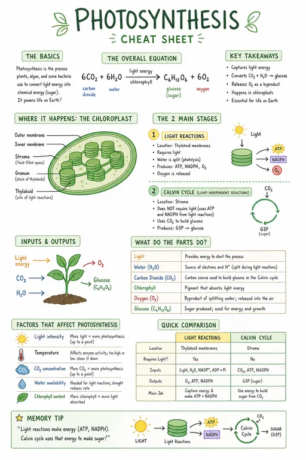
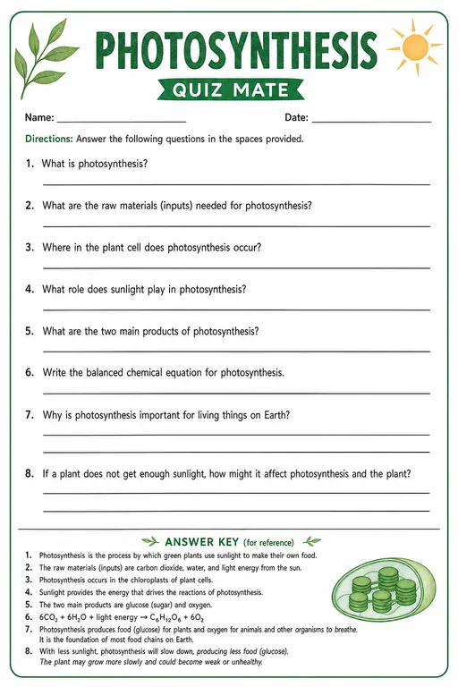
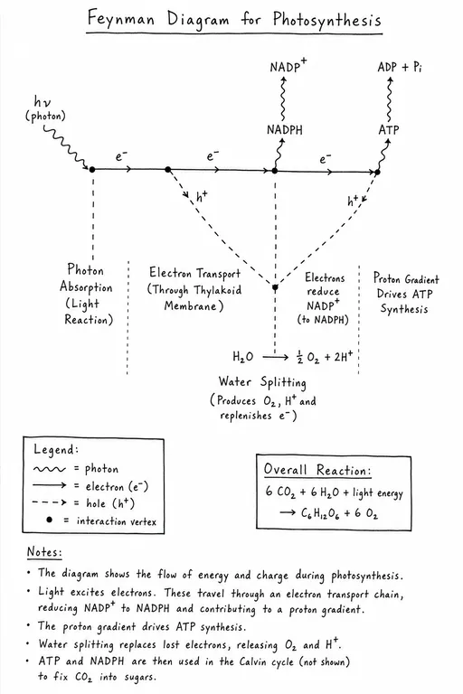
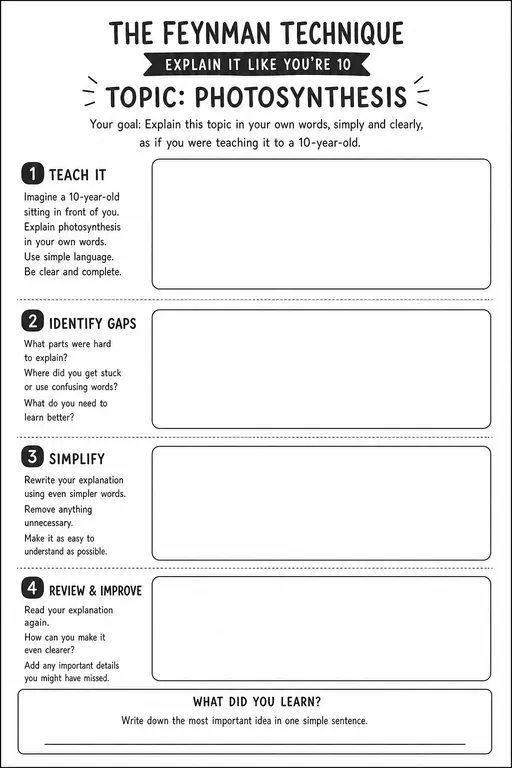

/cheatsheet and a topic.
/quizmate, a topic and one added sentence.Same topic, same tool, two codes. Click an image to see it full size.
All 27 codes are also available as a printable PDF in Free resources.
Looking for codes that transform a photo? See visual codes for images and for video.
Visual codes for studying
Type a code and a topic into an AI chatbot and you get a study poster or a worksheet in seconds. We tested 27 codes from the lists circulating on social media, on three subjects. The codes that make students practise come first — because a poster that is only read does the least for learning.
What is a visual code for studying?
A visual code for studying is a short, slash-prefixed word — like /cheatsheet or /quizmate — that you type into an AI chatbot together with a topic and the words "Make it an image". The chatbot returns a study poster, a mind map, a timeline or a worksheet on that topic. The codes are not official commands: the model recognises the word from its training data and produces its most typical version of it. This page shows 27 codes tested on photosynthesis, the French Revolution and the Pythagorean theorem, with the exact prompt for each, the sentence some codes need added, and the codes that failed.
Not commands — an educated guess
These codes are not official commands built into the chatbot. Nobody has programmed a /cheatsheet button. The model has simply seen so many cheat sheets, mind maps and quizzes in the data it was trained on that one word is enough for it to understand what you are after.
That is also the catch. What you get is an average interpretation of everything the model has seen. Often the average is exactly right. Sometimes it is not, and then you need to add your own instructions to get the result you want. That is why every practise code below comes with one extra sentence.

/feynman alone. A Feynman diagram from particle physics — notation that does not fit photosynthesis.
/feynman + one sentence. The worksheet the code was meant for.Make your own
Code and topic
Type the code, then the topic: /cheatsheet photosynthesis. Better still, paste your own notes or the textbook page after it.
Ask for an image
End with Make it an image. Without it, most chatbots answer in text.
Add the sentence
Practise codes need one extra sentence at the end of the prompt. Without it, the model often prints the answers right on the sheet — and there is nothing left to practise. The sentence moves them to a key at the bottom. It is on each card's Add line, and the copy button includes it.
Check before you share
Read every fact and work through the answer key yourself. The key was the weakest part of almost every worksheet we tested.
Three ways to use them
Print and hand out
The worksheets in Part 1: students fill them in, fold them or cut them up.
Put it on the wall
Cheat sheets, timelines and mind maps as support for the whole unit.
Share it digitally
In your learning platform, or on the student's phone before a test.
Each card shows which uses suit that code. The images are about 1024 × 1536 pixels: sharp on A4, soft on an A3 poster — upscale before you print large. And check the facts first: a mistake on the wall stays up for months.
Why the practise codes come first
A review of ten common study techniques found that testing yourself and spreading practice over time give the largest gains (Dunlosky et al., 2013). A later meta-analysis of 242 studies put numbers on it: d = 0.85 for spaced practice, d = 0.74 for practice testing, and d = 0.44 for both summarising and highlighting (Donoghue & Hattie, 2021). All ten techniques help; summarising and highlighting help least. Most of the studies measured factual knowledge, so the ranking says less about deep understanding.
One thing matters here: when AI writes the summary, the student skips the part that did the helping. That is the trade-off question in practice — what does the student stop doing, and does it matter? A poster is fine. A poster the student tests themselves against is better.
Where can you make them?
In any chatbot that generates images, such as ChatGPT or Gemini. Check the age limit before you plan a lesson: ChatGPT is 13+, with parental consent below 18. Gemini is 13+ with a personal or school account — a school account only once the school's administrator has turned it on — and Google's paid AI plans are 18+ in the EEA, Switzerland and the UK. In most classrooms that means the teacher makes the sheet and prints or shares it — the student needs no account at all. You are responsible for following your country's rules and your school's guidelines.
All images on this page were made with GPT Image 2, portrait, high quality. The prompt went straight to the image model; in a chatbot the chat model reads it first, so your result can differ — sometimes for the better.
Practise
Worksheets the student fills in, folds or answers. Each code needs the sentence on its Add line. The copy button hands over the whole prompt — replace [your topic] with yours.
What went wrong when we tested
- The answer key is the weak link. The questions were good; the answers were sometimes not. In maths the multiple-choice key was wrong on two of five questions.
- Exact things break first. Answer keys, calculations, maps and crosswords failed more often than mind maps and comics.
- Plausible facts, wrong facts. In the first round, six of sixteen posters contained a factual error — written as confidently as the rest.
- Wrong pictures. Delacroix's Liberty Leading the People, painted in 1830, turned up again and again on posters about the revolution of 1789.
- The surface reading wins. When a word has two meanings, the model picks the most common one:
/feynmangave physics, not a study technique.
Cards marked Spot the error contain a mistake worth showing to the class. Finding it is a lesson in itself.
Tip: anchor the facts in your own material
If you have Gemini and Gemini Notebook (formerly NotebookLM), add your own material as sources in a notebook — the textbook chapter, your slides, your notes. Then open Gemini, add the notebook through the + button in the chat, and use the codes there. The image is built from your sources instead of from the model's general memory, which reduces the risk of factual errors. It does not remove it, so the check in step 04 still applies.
Read
Posters and overviews. The code alone is usually enough. Every card suggests a way to turn reading into practice.